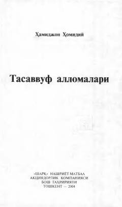

TASharqning buyuk tasavvuf allomalari va mashoyixlari hayoti haqida ma'lumot beruvchi asar.
Ushbu kitob Sharqning mashhur mashoyixlari, sof tasavvuf namoyandalari va avliyolarining hayoti hamda faoliyatiga bag'ishlangan. Unda oltmishdan ortiq tasavvuf allomalarining tarjimai holi, qarashlari va hikmatlari birinchi manbalar asosida ravon usulda yoritib berilgan.